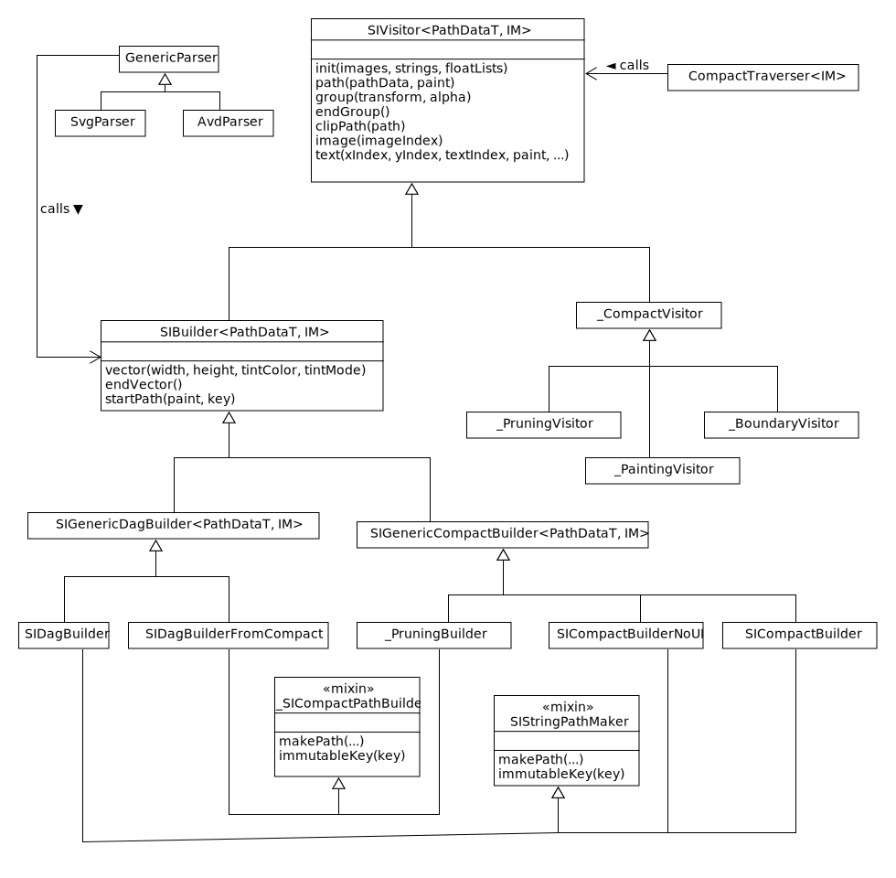

This library is all about format conversions. Essentially, an SVG file is converted into a series of drawing commands on a canvas, with various intermediate representations. Android Vector Drawable (AVD) files are accepted as well. The various formats are illustrated below:
An SVG file is turned into an intermediate parse graph, and then converted
on to a final form. It can be made into a renderable ScalableImage
instance, which comes in two flavors: "Compact" and "DAG."
The "Compact" format is a space-efficient binary representation, largely
held in a byte array. It's a memoization of a traversal along the graph
structure of the underlying asset. The compact format can be directly
rendered, and indeed applications that maintain many scalable images
in memory might choose to optimize space by doing so. The primary reason
for the compact format, however, is that it's easily externalized. A
.si is a straightforward output of the internal binary structures.
The "DAG" format is a pretty standard directed acyclic graph representation of the asset. It uses (significantly) more memory than the compact format, but it renders faster, because the native Flutter elements are pre-built.
The binary .si files can, of course, be read and converted to
either flavor of ScalableImage instance. Typically,
a .si file is smaller than an SVG file, but the more
important benefit is that it's much faster to read in. .si
files are meant to be used for things like assets that are packaged with
an application.
The jovial_svg library includes command-line programs to convert
SVG and AVD XML assets to the .si format. This introduces an
interesting bit of variability to the code, because some of the library
support is different between Flutter and "vanilla" Dart. For example, the
Flutter matrix package that is used for affine transformations is not
available for command-line applications.
Another transformation can happen when a viewport is set on a
ScalableImage. This operation includes a prune
option that strips away elements that are known to be outside the bounds
of the viewport.
All of this mixing and matching leads to an interesting structure. In this library, code reuse was maximized, even though this meant a somewhat complex inheritance structure. I think it was the right tradeoff here, because it means the code is better tested, and some subtle bits of logic only occur once. But it does make the code a little hard to follow at times.
Here's a somewhat simplified illustration of the program structure.
SIVisitor is central - some flavor of visitor is used for
all of the arrows on the above diagram, except for the operations
on the DAG representation.

SVG Path elements are an interesting example of the mix-and-match nature
of this design. Paths start out as strings, they have a compact binary
representation, and they eventually become Flutter Path objects.
This lead naturally to a parameterized type, and the use of two mixins
(_SICompactPathBuilder and SIStringPathMaker).
A final principle that's widely used in this library is object canonicalization. That is, if two elements of the graph structure are equivalent, they are collapsed into one element, referenced from two places. This is done with path instances, strings (from the text element), affine transformation matricies, and some other data.
The internal graphs are stricly immutable. Naturally, it's essential to
maintain this invariant in the presence of object canonicalization. Note
also that transformations of ScalableInstance images rely
on this: A translated ScalableImage shares most of its
data with the instance from which it derived.
Canonicalizing path elements is particularly important for certain AVD files. The AVD format is essentially a simplified SVG that's constrained to be a tree, not a DAG. Many AVD files are created by converting SVG files, and contain a large number of identical paths.
The alert reader might notice that three of the canonicalized types are
passed to the init(images, strings, floatLists> method on
SIVisitor, whereas path objects are not. That's partly for
historical reasons, and partly for simplicity. Since the AVD file format
has no forwards references, an intermediate parse graph is not needed, and
is not created. Because of this, the path objects need to be canonicalized
"on the fly," as the file is parsed. Images, strings, and float lists are
only present in the SVG file format, which is parsed to an intermediate
parse graph, in order to handle forward references (the SVG use
element). With an in-memory parse graph, it's trivially easy to do the
canonicalization up front, before traversing the structure, and doing so
simplifies the traversal (and thus, the binary file format).
It is hoped that this brief visit of some of the design elements of
jovial_svg has been helpful.